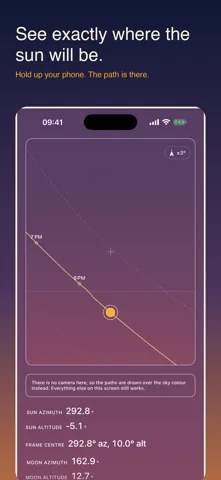
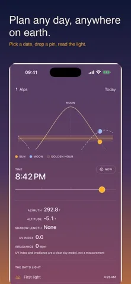
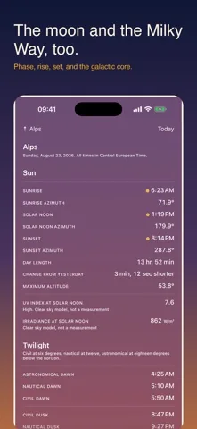
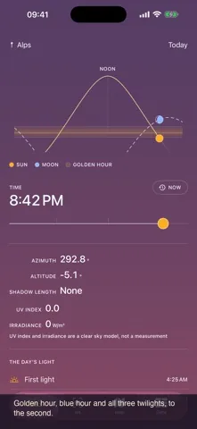

Sun, moon and Milky Way
Sun position and golden hour tracker for iPhone
Stand where you will shoot, point your iPhone at the sky, and read the azimuth, the altitude, the shadow length and the golden hour for any hour of any day, computed on the device and offline.
Free to install. iPhone with iOS 17 or later. Today at your current location is free forever in all four views. Sunlit Pro is one payment of 9.99 EUR and nothing renews.




Day length 14 h 12 m 50 s, which is 3 m 51 s shorter than the day before.
Adaptive Sky
The background is a readout, not decoration.
Most sun apps put a photograph behind the numbers. Sunlit puts the sky. The gradient is interpolated from the real altitude of the sun at the moment and the place you have selected, so four in the morning does not look like noon. Drag the time scrubber and the background moves with the figures.
Above the gradient there is one instrument layer and nothing else: hairlines, tabular figures, no drop shadows and no glass. Text is held to a contrast ratio of at least 4.5 to 1 against the darkest and the lightest sky the gradient can produce.
Four views
One place, one date, four ways of looking at it.
A header carries the place and the date, and it governs everything. Change either one and all four views follow.
Sky
The home screen. The arc of the day drawn across the adaptive gradient, with the sun and the moon at their true positions on it. A time scrubber sits under it; drag it and the whole screen moves through the day, background included.
- Azimuth, altitude, and the next event with a countdown
- The clear sky UV and irradiance models for the moment
- The day rail: first light, sunrise, golden hour, solar noon, golden hour, sunset, last light
AR
The live camera with the paths of the sun and the moon drawn over the world in front of you, hour marks along each, and the summer solstice, winter solstice and equinox paths as reference curves.
- A chip shows the current heading uncertainty in degrees and turns amber when the compass needs calibrating
- The galactic plane of the Milky Way appears once the selected instant is dark enough
- Sweep the camera along your skyline and Sunlit records it as a horizon profile
Map
The pin, and the directions that matter from it. Sunrise and sunset rays in the sun accent, the moon rays in its own, and the path of the day laid over the terrain you are standing on.
- A shadow projection for an object whose height you set
- Tap anywhere to move the pin, and every other view follows
- The coordinate of a dropped pin is exact with no connection
Data
The tabulation, for people who want the numbers rather than the picture. All three twilights, solar noon, day length and how much it has changed since yesterday.
- The moon phase calendar, with rise and set
- Upcoming solar and lunar eclipses, with visibility and obscuration at the selected place
- The altitude curve across the whole year, and export to CSV and image
Free to install, and today is free forever.
Sun position, compass, the AR sun path, sunrise, sunset, all three twilights, golden hour, blue hour, solar noon, day length and shadow length, for today at the place you are standing, with no trial and no countdown.
What people use it for
Four questions, one instrument.
The same ephemeris answers a photographer, a gardener and somebody standing in an empty flat with a lease in their hand. Each of these guides walks through one of those jobs.
The core
What it computes, and how well.
Sunlit carries the ephemeris rather than calling one. The astronomical core is plain Swift with no user interface and no network, which is what makes it possible to check it against published reference values by the thousand.
| Quantity | Method | Accuracy of the method |
|---|---|---|
| Solar position | NREL Solar Position Algorithm, Reda and Andreas | 0.0003 degrees |
| Delta T | Espenak and Meeus polynomial series | 1 second, 1900 to 2100 |
| Nutation | IAU 1980 series, 63 terms | 0.001 arcsecond |
| Refraction | Bennett, corrected for pressure and temperature | 0.1 arcminute above 5 degrees |
| Lunar position | Meeus chapter 47, truncated ELP-2000/82 | 10 arcseconds in longitude |
| Rise, set and twilight | Altitude sampled every 60 seconds, then bisected | Solved to 1 second |
| Eclipses | Topocentric separation of the two discs, with parallax | Bounded by the lunar ephemeris |
| Milky Way | Sagittarius A star, precessed to the date | 0.01 degrees |
The core is held to reference values from the NOAA solar calculator, the United States Naval Observatory, JPL Horizons and the NASA eclipse canon, as fixtures that run before any build ships.
Honesty
What Sunlit measures, and what it models.
UV and irradiance are clear sky models. They are not measurements. Sunlit has no light sensor and no weather feed. The figures say what a cloudless sky would deliver at that solar altitude, that elevation and that time of year. Cloud, haze and dust are not in them, and they carry a model label everywhere they appear.
The compass says how sure it is. Heading comes from device attitude in the true north reference frame rather than a raw magnetic reading, with magnetic declination from a model carried inside the app. The AR view shows the current heading uncertainty in degrees at all times. A direction without an uncertainty is a guess with a confident face.
Polar day and polar night are said out loud. There are places and dates where the sun does not rise, and places and dates where it does not set. Sunlit reports that in words instead of printing a time that never happens.
Your horizon is not flat. Sweep the camera along your skyline and Sunlit stores it as 36 sectors of ten degrees, then works out sunrise and sunset against that profile instead of against a flat horizon, and shows you the difference between the two.
Places and dates
Scout a place you have never stood in.
Search that works with no connection
About 34,000 cities are carried inside the app with their coordinate, their elevation and their time zone, so a text search resolves with the aeroplane mode switch on. Where a connection is available, Sunlit can search Apple Maps as well.
The embedded city list is derived from GeoNames and is used under the Creative Commons Attribution 4.0 licence. The credit is repeated in the app and on the privacy page.
Or drop a pin anywhere
Tap the map and the whole app moves to that coordinate. Offline the coordinate is exact; the time zone of a bare coordinate needs a lookup, and if there is no connection Sunlit tells you it has fallen back to the time zone of your device rather than guessing quietly.
Dates work the same way. Move to any day, past or future, and every view recomputes for that instant, the background included.
Widgets. A small widget with the next event and its countdown, a medium one with the arc of the day and the position of the sun on it, a circular lock screen countdown to golden hour, and a rectangular one with sunrise, sunset and the phase of the moon. Each computes its own figures on the device and refreshes at event boundaries rather than on a fixed clock. Widgets are part of Sunlit Pro.
Price
Today, where you are, is free forever.
Not a trial and not a countdown. The free tier covers the current location and the current date in all four views, permanently. One purchase opens every other date, every other place, and the moon.
Free
Today, at your current location, in all four views
- Sun position and compass
- The path of the sun in AR
- Sunrise and sunset
- Civil, nautical and astronomical twilight
- Golden hour and blue hour
- Solar noon and day length
- Shadow length
- The clear sky UV and irradiance models for today
Sunlit Pro 9.99 EUR
One payment. Not a subscription.
- No advertising
- Any date, past or future
- Saved places beyond the current location
- The moon: phase, path, rise, set and calendar
- The Milky Way: galactic centre, galactic plane and visibility windows
- Annual path overlays with the solstice and equinox curves
- A measured horizon profile and obstruction periods
- Eclipses with visibility and obscuration at your place
- Widgets and event notifications
- Export to CSV and image
The free version carries advertising and Sunlit Pro removes it. The App Store shows the price in your own currency and collects the payment. Sunlit never sees your name, your address or your payment details.
Privacy
No account, and no email address.
Nothing you enter leaves your iPhone. Your saved places, your measured horizons and your settings stay in the app's own storage, the location and the camera are used on the device, and all of the astronomy runs with no connection at all. This version shows advertising, which Google's ad kit loads over the network, and Sunlit Pro removes it.
Ten languages
Numbers, dates and units follow the conventions of the language you are in, including the decimal separator and the choice between a 12 and a 24 hour clock.
- English
- Deutsch
- Français
- Italiano
- Español
- Español de México
- Nederlands
- Polski
- 日本語
- Português do Brasil
Questions
Before you install it.
Is Sunlit free?
It is free to install. Today, at the place you are standing, is free forever in all four views: sun position and compass, the AR sun path, sunrise, sunset, all three twilights, golden hour and blue hour, solar noon, day length, shadow length, and today's UV index and irradiance as a clear sky model. There is no trial and no countdown on any of that. The free version shows advertising. Sunlit Pro is a single payment of 9.99 EUR, it removes the advertising, and nothing renews.
What does Sunlit Pro add?
Any date past or future, saved places and any point on earth, the moon with its phase, path, rise, set and calendar, the Milky Way with the galactic centre and a visibility window, the annual path overlay with the solstice and equinox curves, your own measured horizon, eclipses with the circumstances at your spot, Home Screen and Lock Screen widgets, event notifications, and export to CSV and image.
Does it work without a connection?
Every astronomical figure is computed on the iPhone, so the sun, the moon, the twilights and the eclipse circumstances all work in aeroplane mode. A text search for a city works offline too, because 34,106 cities are carried inside the app with their coordinate, elevation and time zone. Two things do need the network: the Map view loads Apple Maps tiles like any map, and the time zone of a bare dropped pin needs a lookup. When that lookup fails, Sunlit says it has fallen back to the time zone of your device instead of guessing quietly.
How accurate are the times and the positions?
Solar position comes from the NREL Solar Position Algorithm, accurate to 0.0003 degrees. Lunar position comes from a truncated ELP-2000/82 series, accurate to about 10 arcseconds in longitude. Rise, set and twilight come from a numerical solver rather than an interpolation, so grazing events and high latitudes come out right, and polar day and polar night are reported as such instead of an invented time.
Why does the direction wander in the AR view?
The magnetometer in a phone measures a weak field, and anything magnetic nearby competes with it: a MagSafe charger, a magnetic case, a car dashboard, a tripod head, steel in a wall. Sunlit does not hide that. The AR view carries a chip showing the current heading uncertainty in degrees at all times, and it turns amber when iOS reports that the compass needs calibrating. Step away from metal and move the phone slowly in a figure of eight, and the figure on the chip should drop.
Are the UV index and irradiance measured?
No. They are clear sky models, and they carry that label everywhere they appear. Sunlit has no light sensor and no weather feed. The figures say what a cloudless sky would deliver at that solar altitude, that elevation and that time of year. Cloud, haze and dust are not in them.
Which iPhone do I need?
An iPhone running iOS 17 or later. The AR view also wants the camera, and it will ask once; refuse and the view still opens, with the paths drawn over the sky colour instead of the live image.
Point it at the sky and see for yourself.
Sunlit: Sun and Moon Tracker. Free to install, iPhone with iOS 17 or later, ten languages, and every calculation done on the device.